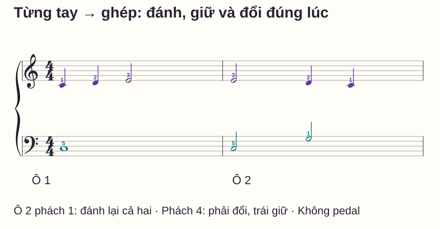
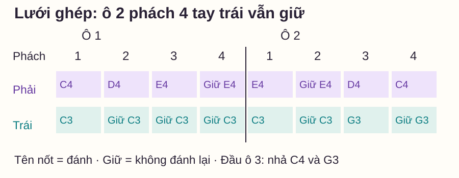

Phối hợp hai tay
Tập piano từng tay đến khi nào thì nên ghép hai tay?
# Tập piano từng tay đến khi nào thì nên ghép hai tay?
Bạn chơi tay phải khá trôi, tay trái cũng nhớ, nhưng khi ghép thì cả hai dừng ngay chỗ đổi nốt. Bạn có thể quay lại tập riêng rất lâu mà điểm vướng vẫn còn: hai phần riêng chưa cho biết bạn đã hiểu việc chúng diễn ra cùng lúc ra sao.
Tập riêng vẫn hữu ích khi cần sửa nốt, ngón hoặc trường độ của một bè. Điều cần quyết định là đoạn nào cần tách, tách để sửa việc gì và khi nào quay lại phép thử hai tay. Bài này đưa ra một quy trình có thể kiểm ngay với hai ô nhịp tự biên soạn.
Trả lời nhanh
Bạn có thể thử ghép một đoạn ngắn khi từng tay đã xác định đúng nốt, ngón, thời điểm đánh và nhả ở cùng một tốc độ phù hợp. Không cần chờ thuộc cả bài, nhưng cũng không nên ghép một đoạn còn chưa biết tay riêng phải làm gì. Trước khi thử, chỉ ra các điểm cùng đánh và các điểm một tay giữ khi tay kia đổi. Nếu ghép sai, kiểm lại: lỗi đã có ở một tay thì sửa riêng; hai tay riêng đều rõ nhưng cùng vào sai thì luyện chính điểm phối hợp đó. Dùng đoạn một hoặc hai phách, rồi nối thêm phách trước và sau để kiểm chuyển tiếp.
Tập riêng giải quyết việc gì?
Trong 12 Practice Tips của Yamaha, tập riêng tay và riêng bè được nêu như những công cụ luyện tập. Bài viết này dùng nguyên tắc đó để thiết kế phép quyết định cụ thể cho người mới; các ngưỡng hai lượt, độ dài đoạn và lịch mười phút dưới đây là đề xuất của website, không phải quy định của nguồn.
Tách tay giảm số nhiệm vụ phải làm cùng lúc. Nó giúp bạn nghe rõ một bè, chọn ngón và biết chính xác nốt giữ dài tới đâu. Tuy nhiên, bài toán phối hợp còn có quan hệ giữa hai tay: cùng vào, khác thời điểm đổi, hoặc một bên nghỉ. Những quan hệ ấy cần được thử trực tiếp.
Không dùng “tôi đàn được riêng” như một nhận xét chung. Hãy hỏi: ở tempo nào, đoạn nào, có dừng không, có giữ đủ nốt dài không? Chơi tay phải ở một tốc độ và tay trái chậm hơn nhiều chưa cho một mức thử ghép chung.
Bài tập: hiểu mẫu trước khi đàn
Trong bài, C = Đô, D Rê, E Mi, G Sol. C4 là Đô giữa; C3 là Đô thấp hơn một quãng tám. Khóa Sol dùng cho hàng tay phải, khóa Fa cho tay trái trong mẫu này. Nốt đen dài một phách, nốt trắng hai phách và nốt tròn bốn phách trong nhịp 4/4. Mỗi ô đếm 1–2–3–4.
Ngón 1 là cái, 2 trỏ, 3 giữa, 4 áp út, 5 út. Tay phải ở C4–G4, tay trái ở C3–G3. Tập không pedal để nghe và kiểm rõ thời điểm nhả. Giữ cổ tay thoải mái; dừng và đặt lại nếu đang gồng để giữ nốt.

| Tay | Ô 1 | Ô 2 |
|---|---|---|
| Phải | C4 đen (1), D4 đen (2), E4 trắng (3) | E4 trắng (3), D4 đen (2), C4 đen (1) |
| Trái | C3 tròn (5) | C3 trắng (5), G3 trắng (1) |
Các số trong ngoặc là ngón. E4 đầu ô 2 được đánh lại, không nối dài từ ô 1; C3 đầu ô 2 cũng được đánh lại. Không có dấu nối trường độ trong mẫu. Ở cuối ô 2, nhả C4 và G3 khi đếm tới số 1 của ô tiếp.
Từng bước: kiểm riêng rồi thử ghép đúng chỗ
1. Chọn hai ô, xác định một tempo chung
Đọc bảng và chỉ trên sheet trước. Có thể thử 50 phách/phút, một click mỗi phách; đây là điểm thử, không phải chuẩn phải đạt. Nếu vẫn chưa tìm kịp phím, chọn chậm hơn hoặc chỉ một ô. Đếm một ô chuẩn bị trước mỗi lượt.
2. Kiểm từng tay với đủ thời gian giữ
Chơi tay phải một lượt, tay trái một lượt ở tempo đã chọn. Ở tay trái ô 1, đánh C3 ở số 1 rồi giữ qua 2, 3, 4. Không biến phần “chỉ một nốt” thành bốn lần đánh để dễ đếm.
Thử lại tối đa hai lượt mỗi tay sau khi sửa chỗ sai. Trước khi ghép, bạn cần biết và thực hiện được tất cả điểm vào/nhả của đoạn mà không kéo dài phách để tìm nốt. Hai lượt đúng là một dấu hiệu để thử, không phải bằng chứng bắt buộc rằng cả bài đã thuộc.
3. Nói hành động chung ở điểm khó
Ô 2 có ba mốc quan trọng: phách 1 cả hai đánh lại E4/C3; phách 3 cả hai đổi sang D4/G3; phách 4 phải sang C4 trong khi trái giữ G3. Nếu chưa nói được điều này, xem lưới dưới trước khi đàn thêm.

4. Ghép một ô rồi tập qua ranh giới
Ghép riêng ô 1, kết thúc và đặt lại. Sau đó thử ô 2. Nếu phách 4 ô 2 làm trái đánh lại G3 theo phải, lấy riêng phách 3–4: cùng đánh D4/G3 ở 3, phải đổi C4 ở 4 còn trái giữ G3, nhả cùng ở số 1 tiếp.
Khi đoạn nhỏ ổn, thêm phách 2 phía trước: phải giữ E4/trái giữ C3 ở 2, rồi đổi đúng ở 3 và 4. Cuối cùng chơi đủ hai ô để kiểm cả chỗ kết ô 1 sang ô 2. Đừng chỉ lặp hai phách đã sửa rồi mặc định mọi mối nối đều ổn.
Cây quyết định khi ghép chưa được
| Phép thử | Kết quả quan sát | Việc tập tiếp |
|---|---|---|
| Chơi riêng đúng đoạn vừa sai | Một tay vẫn sai nốt hoặc giữ thiếu | Tách tay đó, sửa nốt/ngón/độ dài cụ thể |
| Hai tay riêng ở cùng tempo đều rõ | Ghép sai điểm cùng vào | Đọc lưới, gõ hai tay ở các điểm bắt đầu rồi đàn đoạn ngắn |
| Hai phách ghép được, nối lại thì dừng | Khó ở đường vào/ra đoạn | Thêm phách trước và sau, không tăng tempo |
| Đúng nốt nhưng càng chơi càng nhanh | Chưa giữ phách chung | Gõ và đếm đoạn trước, thử lại tempo thấp hơn |
Những lỗi dễ khiến bạn tập riêng quá lâu
Chờ thuộc hoàn toàn cả bài mới thử ghép. Với mẫu ngắn đã rõ, hãy thử một ô để phát hiện quan hệ cần luyện. Nếu phép ghép quá khó, giảm số phách; không đặt điều kiện phải nhớ nhiều trang trước.
Tập lại toàn bộ tay phải khi lỗi chỉ ở phách 4 tay trái. Nêu đúng hành động sai trước: trái đánh lại thay vì giữ G3. Sửa điểm đó trong quan hệ với tay phải rồi nối lại, thay vì thêm nhiều lượt phần vốn đã đúng.
Tay phải kéo tay trái đổi theo mọi nốt. Trên lưới, chỉ bằng lời các ô “trái giữ”. Gõ chỉ điểm bắt đầu giúp biết khi nào có tiếng mới; sau đó quay lại đàn để tập cả giữ và nhả mà gõ bàn không mô phỏng được.
Tăng tốc sau một lượt may mắn. Thử lại sau một khoảng đặt lại, rồi bắt đầu trực tiếp từ ô 2. Nếu chỉ chơi được khi chạy từ đầu, hãy làm rõ điểm bắt đầu mới trước khi tăng tốc.
Routine mười phút
- 0–2 phút: đọc nốt, ngón và các điểm đánh/giữ/nhả, chọn tempo chung.
- 2–4 phút: kiểm riêng từng tay, sửa một lỗi cụ thể.
- 4–6 phút: ghép từng ô và lấy hai phách có vấn đề.
- 6–8 phút: thêm phách trước/sau rồi nối đủ hai ô.
- 8–10 phút: nghỉ ngắn, bắt đầu trực tiếp ô 2 và ghi điểm còn vướng.
Khi nào chuyển sang đoạn mới?
Thử ba yêu cầu: chơi đủ hai ô không dừng và giữ đúng nốt dài; bắt đầu được ngay từ ô 2; giải thích được tại sao tay trái không đánh lại ở phách 4 ô 2. Làm lại sau một khoảng đặt lại ở tempo vừa kiểm soát được. Nếu một yêu cầu chưa đạt, dùng bảng quyết định để chọn đúng việc sửa.
Các tiêu chí này giúp đánh giá mẫu của bài, không bảo đảm mọi đoạn piano đều xử lý theo cùng số lượt. Đoạn có bước nhảy, nhiều bè hoặc đổi ngón phức tạp có thể cần cách chuẩn bị khác.
Đọc tiếp cách chơi piano hai tay để có quy trình tổng quát; dùng một tay giữ, một tay di chuyển nếu hay nhả theo tay kia. Khuông nhạc kép giải thích cách nhìn hai bè trên cùng trục thời gian.
Câu hỏi thường gặp
Có cần tập tay trái nhiều hơn tay phải không?
Tập phần có lỗi quan sát được. Nếu trái đã giữ đúng mà phải chưa rõ nốt, dành thời gian cho phải; không chia lượt chỉ dựa vào tên tay.
Tôi tập riêng rất nhanh rồi ghép chậm có được không?
Có thể luyện ở nhiều tempo vì mục tiêu khác nhau, nhưng trước phép ghép hãy kiểm cả hai phần tại cùng tempo ghép. Điều đó giúp xác định nhiệm vụ đang so sánh.
Một tay phải giữ lâu thì có cần tập riêng không?
Có thể cần kiểm thời điểm vào và nhả. Ít tiếng không đồng nghĩa không có nhiệm vụ; phần giữ dài vẫn phải nằm trong phách chung.
Có nên dùng pedal cho dễ nối tiếng không?
Mẫu này tập không pedal để kiểm giữ/nhả bằng ngón. Thêm pedal khi mục tiêu và cách đổi pedal đã được hướng dẫn riêng.
Ghép sai có phải quay lại tập riêng từ đầu không?
Không nhất thiết. Kiểm đúng đoạn sai trước. Nếu riêng đã đúng mà ghép sai, luyện quan hệ hai tay ở điểm đó có ích hơn việc bắt đầu lại toàn bộ.
Có nên tiếp tục khi tay căng để giữ nốt?
Dừng, nhả và đặt lại thoải mái; giảm nhiệm vụ thay vì cố giữ bằng lực gồng. Mẫu chỉ cần tầm năm phím mỗi tay, không yêu cầu cố giãn. Nếu vẫn khó chịu, nhờ giáo viên quan sát trực tiếp cách ngồi và chuyển động.
Nguồn và ghi chú biên soạn
- Yamaha — 12 Practice Tips, Suggestions and Strategies, Stephen Pierce: tham khảo vai trò tập riêng tay/bè; kiểm ngày 27/10/2026.
- Sheet, lưới và bảng quyết định là nội dung gốc do website biên soạn. Lịch và tiêu chí là gợi ý thực hành; chưa được giáo viên độc lập review hoặc thử nghiệm người học.